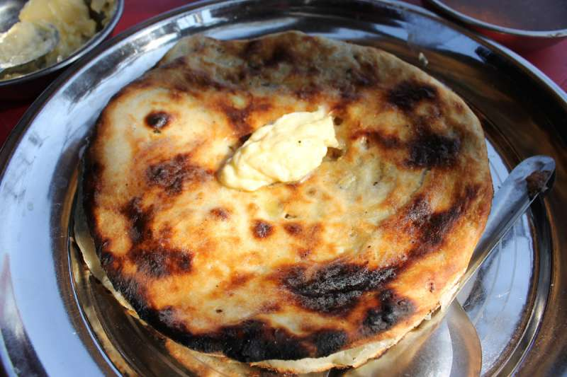
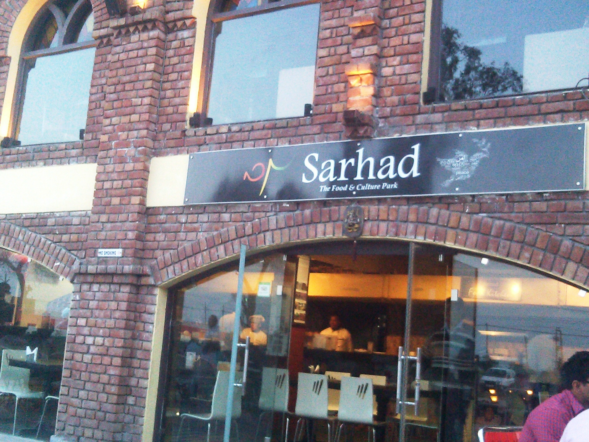
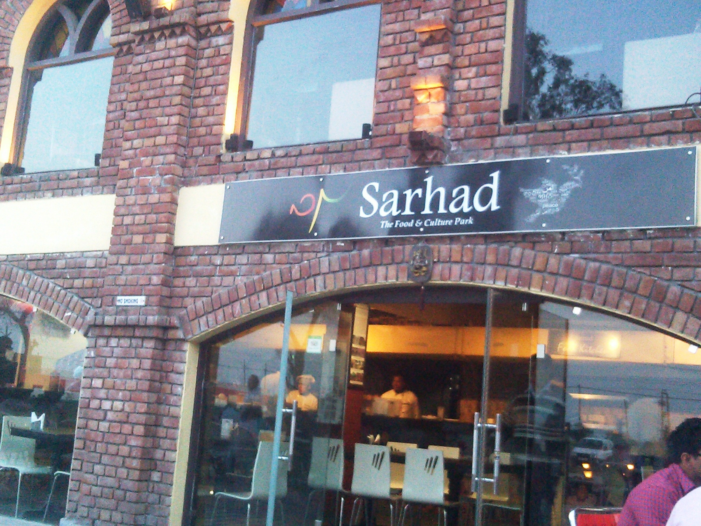

This is definitely true in the case of Punjabis who are true gourmets. To them food is everything, and no one can savor the fatty delicacies in all its true splendor like a Punjabi does! The culinary capital of India- Amritsar is a proof of this fact. The home to the iconic Golden Temple is also home to the best food in the world. Everything in this city revolves around food- be it socializing, prayer or festivals. Kulchas, lassi, jalebi, you name it and it will be found in Amritsar.
When in Amritsar, start out with the Golden Temple. The best time to visit is during the morning when the Guru Granth Sahib is brought to the inner sanctum. After offering your prayers, head over to the langar, the largest free kitchen in the world! The volunteers here cook and serve a simple meal of dal, roti, sabzi and kheer to lakhs of devotees each day. Even if you don’t have the time for langar, don’t leave the Kara Prasad on your way out. You will have to jostle among a large crowd for this ghee-laden delicacy but a bite of it will prove to be totally worth it!

Amritsar is synonymous with Kulchas, the maida bread baked in a tandoor. Located beside the Golden Temple and the Wagah Border, the All India Famous is a place to have the butter drenched, potato and cauliflower stuffed kulcha. Touted by some to be a foodie’s pilgrimage spot, this place has been serving just kulchas over the many years of its existence. You can have kulchas for all your meals of the day here and each of it will be an experience incomparable to the other. They serve kulcha alongside chana masala, sliced onions and tamarind chutney. It is a perfect place for breakfast or lunch since they tend to run out of kulchas by 2pm!!
FAMOUS RESTAURANTS

 
